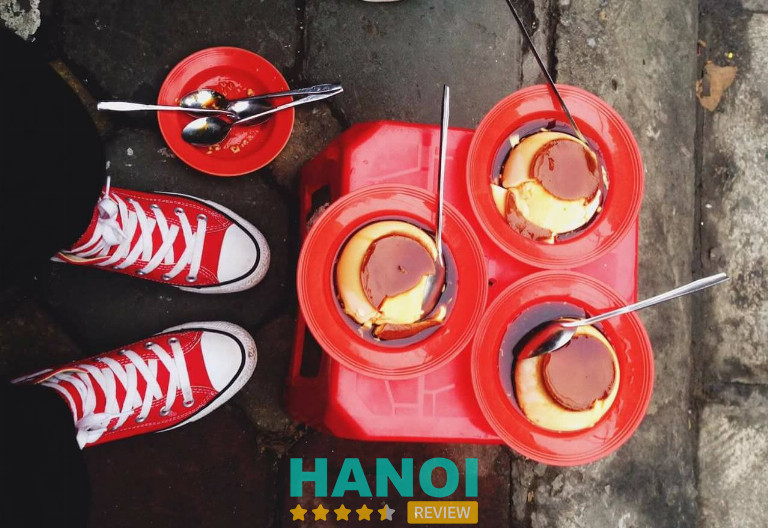
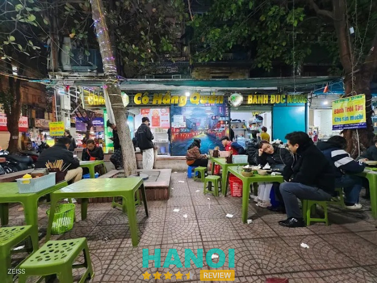
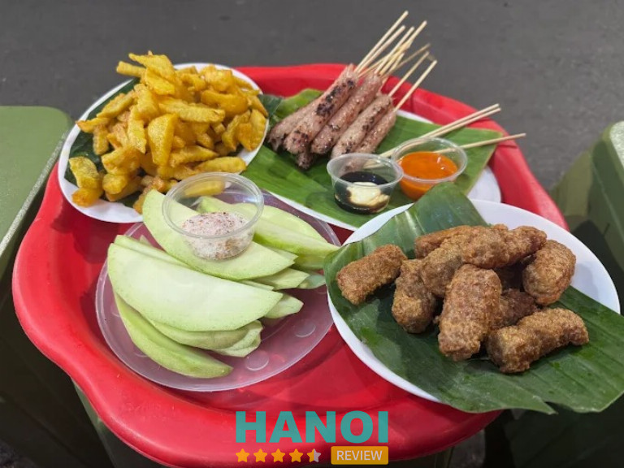
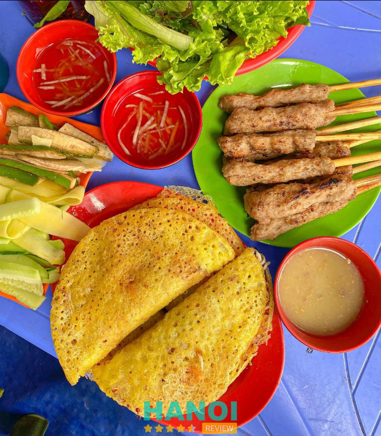
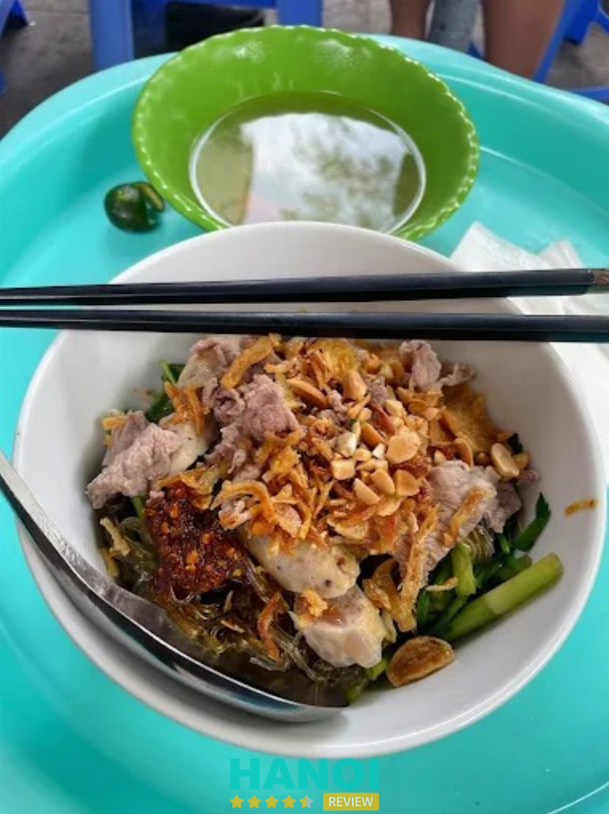
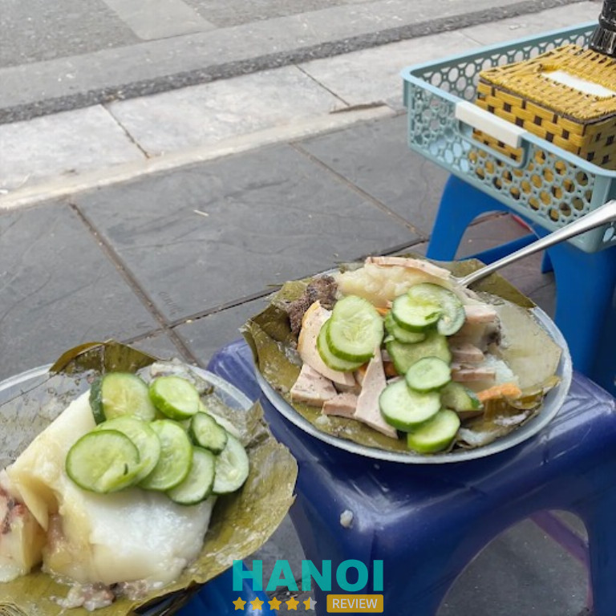
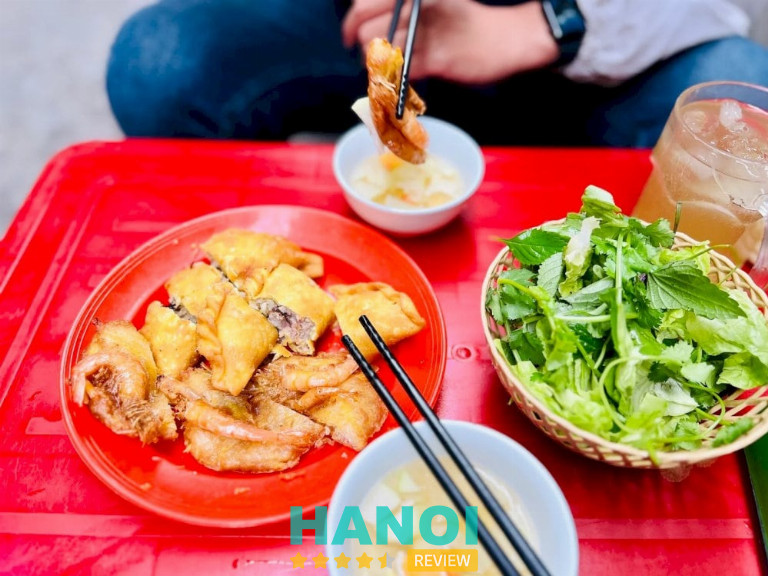
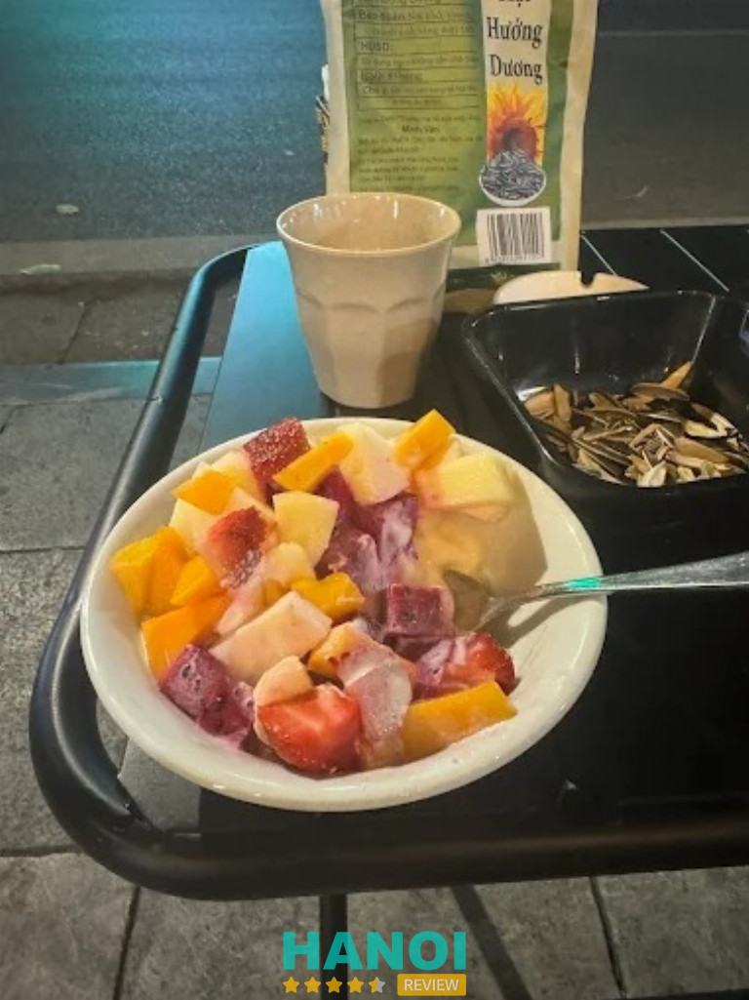
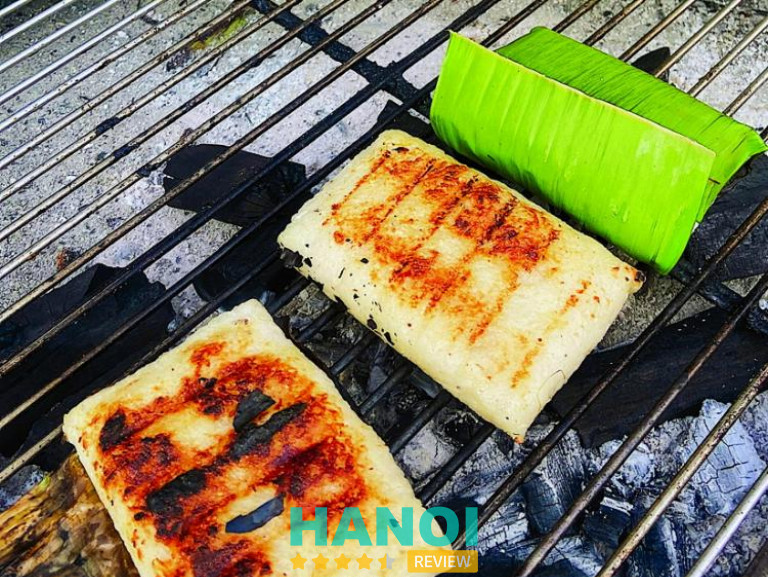
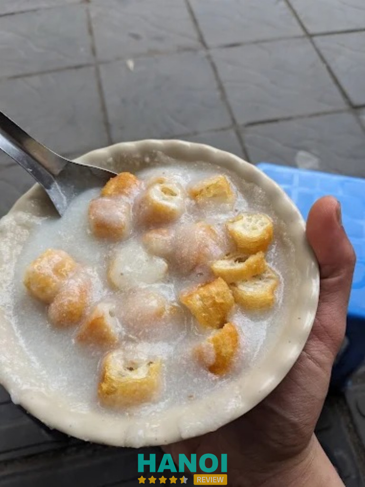

10 Món ngon vỉa hè ở Hà Nội hấp dẫn, giá cả bình dân
Nhắc đến món ngon vỉa hè ở Hà Nội, người ta sẽ nghĩ ngay đến những hương vị dân dã, quen thuộc nhưng đầy cuốn hút. Không chỉ gắn liền với ký ức tuổi thơ, đây còn là trải nghiệm văn hóa ẩm thực đặc sắc của Thủ đô, thu hút cả người dân địa phương lẫn du khách. Sự đa dạng, ngon miệng và giá cả hợp lý luôn khiến những món ăn này giữ trọn sức hút.
Top 10 món ngon vỉa hè tại Hà Nội được người dân yêu thích nhất hiện nay
Món ngon vỉa hè ở Hà Nội luôn mang lại trải nghiệm ẩm thực độc đáo, vừa quen vừa mới. Những lựa chọn này giúp bạn dễ dàng khám phá hương vị hấp dẫn khó quên.
Caramen Hàng Than – Ba Đình
- Giờ mở cửa: 09h00 – 22h00
- Giá tham khảo: 10.000 – 28.000 VNĐ
Nếu nhắc đến các món ngon vỉa hè ở Hà Nội, nhiều người sẽ nhớ ngay đến caramen Hàng Than – một địa chỉ gắn liền với tuổi thơ của bao thế hệ học sinh, sinh viên và người dân Thủ đô.
Tọa lạc tại số 29 Hàng Than, quận Ba Đình, quán nổi tiếng với hương vị caramen béo ngậy, ngọt dịu và luôn giữ vững uy tín nhiều năm qua. Nhờ bí quyết chế biến riêng và sự chăm chút tỉ mỉ, caramen Hàng Than đã trở thành điểm đến quen thuộc mỗi khi ai đó muốn tìm món tráng miệng mát lành giữa lòng Hà Nội.

Không chỉ dừng lại ở hương vị truyền thống, quán còn liên tục biến tấu, sáng tạo ra nhiều phiên bản mới lạ, phù hợp với khẩu vị của giới trẻ. Chính sự đa dạng này đã giúp caramen Hàng Than khẳng định vị thế trong bản đồ ẩm thực vỉa hè Hà Nội.
Thực đơn phong phú:
Đến đây, bạn có thể thưởng thức nhiều loại caramen hấp dẫn:
- Caramen nguyên gốc truyền thống
- Caramen trân châu dai giòn
- Caramen nếp cẩm béo ngậy
- Caramen sữa chua thanh mát
- Caramen hoa quả tươi ngon
- Caramen cốt dừa, caramen thạch
- Caramen thập cẩm đầy đủ topping
Mức giá vô cùng hợp lý, chỉ từ 10.000 – 28.000 VNĐ, khiến nơi đây trở thành lựa chọn hàng đầu cho những ai muốn khám phá món ngon vỉa hè ở Hà Nội mà vẫn tiết kiệm chi phí.
Với hương vị truyền thống hòa quyện cùng sự sáng tạo, caramen Hàng Than xứng đáng là một trong những quán món ngon vỉa hè ở Hà Nội được nhiều người yêu thích nhất. Nếu bạn đang tìm một địa điểm ăn vặt vừa ngon vừa rẻ, đừng quên ghé qua Caramen Hàng Than để trải nghiệm sự khác biệt.
Thông tin liên hệ:
- Địa chỉ: 29 Hàng Than, Nguyễn Trung Trực, Ba Đình, Hà Nội
- Điện thoại: 0979 314 123
- Facebook: fb.com/Caramen29hangthan
Bánh Đúc Nóng Trung Tự – Đống Đa
Bánh Đúc Nóng Trung Tự từ lâu đã trở thành một trong những địa chỉ quen thuộc khi nhắc đến món ngon vỉa hè ở Hà Nội. Nằm tại khu tập thể Trung Tự, quận Đống Đa, quán thu hút đông đảo thực khách, đặc biệt là vào mùa đông. Với nhiều năm phục vụ, hương vị bánh đúc nóng nơi đây đã tạo được uy tín, trở thành lựa chọn hàng đầu cho những ai muốn thưởng thức một món ăn dân dã nhưng đầy đủ hương vị truyền thống.
Điểm mạnh của quán chính là công thức nước dùng trong, ngọt từ xương, không lạm dụng gia vị công nghiệp, mang đến cảm giác thanh nhẹ mà vẫn đậm đà.

Điểm đặc biệt của quán chính là miếng bánh đúc dẻo mịn, thơm mùi gạo, khi ăn kèm với nhân thịt băm xào mộc nhĩ, rau mùi, hành khô sẽ tạo nên hương vị hài hòa, khó quên. Giá cả tại đây rất hợp lý, phù hợp với học sinh, sinh viên và dân văn phòng.
Một số món phục vụ tại quán:
- Bánh đúc nóng: bột dẻo mịn, nước dùng ngọt thanh từ xương hầm.
- Nhân thịt băm xào mộc nhĩ: đậm đà, thơm béo.
- Rau mùi, hành khô phi giòn: tạo thêm hương vị đặc trưng.
- Đồ ăn kèm: quẩy nóng, tương ớt, giấm tỏi.
Giá cả hợp lý – Ai cũng có thể thưởng thức:
- Bánh đúc nóng: 15.000 – 25.000 VNĐ/tùy món ăn kèm
- Quẩy nóng ăn kèm: 5.000 VNĐ/đĩa
- Nước uống: 5.000 – 10.000 VNĐ
Nếu bạn đang tìm kiếm một địa chỉ thưởng thức món ngon vỉa hè ở Hà Nội, thì Bánh Đúc Nóng Trung Tự chắc chắn là sự lựa chọn lý tưởng. Hương vị truyền thống, giá cả bình dân và sự phục vụ thân thiện sẽ khiến bạn hài lòng ngay từ lần đầu tiên.
Thông tin liên hệ:
- Địa chỉ: 116C2 Trung Tự, quận Đống Đa, Hà Nội
- Điện thoại: 0936 990 068
Nem Chua Nướng Ấu Triệu – Hoàn Kiếm
- Giờ mở cửa: 15h00 – 22h30
- Giá tham khảo: 20.000 – 55.000 VNĐ
Nem chua nướng Ấu Triệu là một trong những địa chỉ ăn vặt quen thuộc của giới trẻ và khách du lịch khi ghé thăm Hà Nội. Nằm ngay gần Nhà Thờ Lớn, quán đã gắn bó nhiều năm với thực khách bởi hương vị nem chua nướng thơm ngon, không gian vỉa hè gần gũi và mức giá bình dân. Nếu bạn đang tìm món ngon vỉa hè Hà Nội thì nem chua nướng Ấu Triệu chắc chắn là gợi ý không thể bỏ qua.

Điểm đặc trưng nhất ở Ấu Triệu chính là nem chua hồng tươi được nướng trên than đỏ rực, tỏa hương thơm lừng khắp góc phố. Thực khách thường ngồi quây quần bên mẹt đồ ăn, vừa thưởng thức vừa trò chuyện rôm rả. Ngoài nem nướng, quán còn phục vụ thêm hoa quả ăn kèm như xoài, cóc, củ đậu, dưa chuột cùng trà chanh mát lạnh, tạo nên sự cân bằng hương vị.
Quán nem chua nướng Ấu Triệu nổi bật bởi mức giá phải chăng, phù hợp với học sinh, sinh viên cũng như du khách. Chỉ từ 20.000 – 55.000 VNĐ, bạn đã có thể thưởng thức trọn vẹn bữa ăn vặt hấp dẫn.
Thực đơn nổi bật:
- Nem chua nướng thơm lừng
- Xoài, cóc, củ đậu, dưa chuột ăn kèm
- Trà chanh mát lạnh
- Một số món vặt khác theo mùa
Nem chua nướng Ấu Triệu đã trở thành “thương hiệu” của ẩm thực vỉa hè Hà Nội. Với hương vị đặc trưng, không gian gần gũi và mức giá hợp lý, đây là địa điểm lý tưởng để tụ tập bạn bè, đặc biệt vào những buổi tối se lạnh của Hà Nội. Nếu bạn muốn khám phá món ngon vỉa hè Hà Nội, nhất định đừng bỏ lỡ địa chỉ này.
Thông tin liên hệ:
- Địa chỉ: 10 Ấu Triệu, Hàng Trống, Hoàn Kiếm, Hà Nội
- Điện thoại: 0989 385 607
Bánh Xèo Đội Cấn – Ba Đình
- Thời gian hoạt động: 11h00 – 22h00
Bánh xèo Đội Cấn là một trong những địa chỉ món ngon vỉa hè Hà Nội được nhiều người yêu thích. Quán có lịch sử hoạt động lâu năm, do hai vợ chồng già trực tiếp đứng bếp nên giữ trọn vẹn hương vị truyền thống.
Từng chiếc bánh xèo vàng ươm, giòn rụm, kết hợp cùng nem lụi chắc thịt, chấm nước mắm pha khéo, khiến thực khách phải nhớ mãi. Với không gian bình dân nhưng ấm cúng, đây là nơi lý tưởng để bạn bè, gia đình thưởng thức bữa ăn ngon miệng mà không lo tốn kém.

Điểm đặc biệt của quán nằm ở lớp vỏ bánh xèo mỏng, giòn tan, nhân đầy đặn với giá đỗ, tôm, thịt. Nem lụi được nướng trên than hồng thơm lừng, ăn kèm với bánh xèo và rau sống tươi sạch tạo nên hương vị cân bằng, khó cưỡng. Giá cả phải chăng, chỉ từ 25.000 – 60.000 VNĐ/phần, phù hợp cho nhiều đối tượng từ học sinh, sinh viên đến nhân viên văn phòng.
Thực đơn nổi bật tại Bánh Xèo Đội Cấn:
- Bánh xèo nhân tôm thịt
- Nem lụi nướng than hoa
- Bánh xèo chay (phù hợp cho người ăn kiêng)
- Rau sống ăn kèm, nước chấm pha đậm vị
- Đồ uống giải khát: trà đá, nước ngọt, bia lạnh
Bánh xèo Đội Cấn không chỉ giữ được hương vị truyền thống mà còn tạo cảm giác thân thiện, gần gũi cho thực khách. Nếu bạn đang tìm một quán bánh xèo ngon ở Hà Nội, đây chắc chắn là điểm dừng chân không nên bỏ lỡ.
Thông tin liên hệ:
- Địa chỉ: 166B Đội Cấn, Ba Đình, Hà Nội
- Điện thoại: 0968 877 752
Bánh Đa Trộn Lý Thường Kiệt – Hoàn Kiếm
- Giờ mở cửa: 11h00 – 18h00
- Giá tham khảo: 30.000 – 50.000 VNĐ
Bánh Đa Trộn Lý Thường Kiệt là một trong những món ngon vỉa hè Hà Nội được nhiều người biết đến nhờ hương vị đậm đà, thanh nhẹ nhưng vô cùng hấp dẫn. Quán nằm trên tuyến phố trung tâm Hoàn Kiếm, thuận tiện cho cả học sinh, sinh viên và dân công sở. Nơi đây gắn liền với bao thế hệ học trò trường Việt Đức, mang đến một không gian ăn vặt quen thuộc, giản dị nhưng chất lượng.

Bánh đa tại quán được trụng vừa tới, giữ được độ dai và thơm của sợi bánh. Miến cũng được chế biến khéo léo, không bị bở mà thấm vị nước dùng đậm đà. Gạch cua là linh hồn của món ăn, được thả nguyên tảng trong nồi, khi múc cho khách mới xắn miếng nhỏ cho vào bát, tạo vị béo ngậy khó lẫn. Nước dùng đậm vị cua đồng, hài hòa với rau sống và topping đi kèm, khiến món ăn vừa ngon miệng vừa cân bằng.
Các lựa chọn món ăn tại quán:
- Bánh đa trộn đầy đủ topping
- Bánh đa cua chan nước dùng
- Miến cua trộn hoặc chan nước
- Bánh đa chay cho khách ăn thanh đạm
- Thêm topping: giò, chả, thịt bò
- Trà đá, nước ngọt đi kèm
Bánh Đa Trộn Lý Thường Kiệt không chỉ là một quán ăn vặt đơn thuần mà còn là nét văn hóa ẩm thực trong danh sách những món ngon vỉa hè Hà Nội. Với hương vị truyền thống, giá cả hợp lý và vị trí trung tâm, đây là địa điểm lý tưởng cho những ai muốn khám phá ẩm thực Hà thành.
Thông tin liên hệ:
- Địa chỉ: 42C Lý Thường Kiệt, Hoàn Kiếm, Hà Nội
- Điện thoại: 0387 754 544
Bánh Giò Thụy Khuê – Tây Hồ
- Giờ mở cửa: 06h00 – 20h30
Trong danh sách những món ngon vỉa hè ở Hà Nội, bánh giò luôn là một cái tên quen thuộc với người dân thủ đô và du khách. Nổi bật nhất phải kể đến bánh giò Thụy Khuê – địa chỉ đã gắn liền với tuổi thơ của nhiều thế hệ. Với vị trí thuận lợi ngay gần trung tâm, quán phục vụ hàng trăm lượt khách mỗi ngày, được đánh giá là một trong những địa chỉ bán bánh giò ngon ở quận Tây Hồ Hà Nội.

Điểm mạnh của quán chính là sự giữ gìn hương vị truyền thống. Bánh giò to gấp rưỡi so với nhiều hàng khác, nhưng giá cả vẫn bình dân. Vỏ bánh dày, mềm mịn, nhân đầy đặn gồm thịt băm và mộc nhĩ, tạo nên hương vị thơm ngon khó quên.
Không chỉ ngon, bánh giò ở đây còn ghi điểm bởi sự nhiệt tình, thân thiện của chủ quán. Giá cả dao động từ 12.000 – 25.000 VNĐ/người, phù hợp cho mọi đối tượng từ học sinh, sinh viên đến người đi làm. Ngoài ra, quán còn mở cửa từ sáng sớm đến tối muộn, rất tiện cho thực khách.
Một số lựa chọn tại quán:
- Bánh giò truyền thống nhân thịt băm, mộc nhĩ
- Bánh giò ăn kèm dưa góp, chả cốm, xúc xích
- Đồ uống giải khát đi kèm
Nếu bạn đang tìm kiếm một địa chỉ món ngon vỉa hè Hà Nội vừa ngon, vừa rẻ, lại mang hương vị truyền thống, thì bánh giò Thụy Khuê chính là lựa chọn lý tưởng. Hãy một lần ghé qua để cảm nhận sự đặc biệt mà quán mang lại.
Thông tin liên hệ:
- Địa chỉ: Số 3 Thụy Khuê, Tây Hồ, Hà Nội
- Điện thoại: 0984 500 041
Bánh Tôm Tây Hồ – Tây Hồ
Bánh Tôm Tây Hồ từ lâu đã trở thành một trong những món ngon vỉa hè Hà Nội gắn liền với ký ức và đời sống ẩm thực của người dân Thủ đô. Nằm ngay vị trí trung tâm, sát hồ Tây lộng gió, quán luôn tấp nập thực khách ghé thăm.
Với hơn nhiều năm phục vụ, nơi đây đã trở thành một thương hiệu uy tín, ghi dấu trong lòng du khách trong và ngoài nước khi nhắc đến món ăn đặc sản Hà Nội. Bánh tôm tại đây mang hương vị truyền thống, được giữ nguyên bản qua nhiều thế hệ, chính vì thế mà danh tiếng ngày càng được lan tỏa.

Điểm làm nên sức hấp dẫn của bánh tôm chính là phần tôm tươi nguyên con được làm sạch, nhúng bột rồi chiên giòn vàng ruộm. Khi ăn, thực khách sẽ cảm nhận vị giòn rụm của lớp vỏ, hòa quyện với vị ngọt đậm đà của tôm. Bánh thường được ăn kèm với xà lách, rau thơm và chấm cùng nước mắm pha chua ngọt đậm vị. Sự kết hợp hài hòa này đã tạo nên “cái hồn” của tinh hoa ẩm thực Hà thành, khiến ai đã thưởng thức một lần đều khó quên.
Thực đơn hấp dẫn tại Bánh Tôm Tây Hồ:
- Bánh tôm chiên giòn truyền thống
- Bánh tôm ăn kèm rau sống, xà lách
- Các loại nước giải khát
- Nước chấm chua ngọt đặc trưng
Bánh Tôm Tây Hồ không chỉ đơn giản là một món ăn vặt mà còn là niềm tự hào của văn hóa ẩm thực Hà Nội. Với vị trí đẹp, hương vị truyền thống và uy tín lâu năm, đây chắc chắn là địa chỉ mà bạn không nên bỏ lỡ khi tìm kiếm món ngon vỉa hè Hà Nội.
Thông tin liên hệ:
- Địa chỉ: Số 1 Thanh Niên, Yên Phụ, Tây Hồ, Hà Nội
- Điện thoại: 024 3829 3737
Sữa Chua Dẻo – Hoàn Kiếm
Sữa chua dẻo từ lâu đã trở thành một trong những món ngon vỉa hè Hà Nội được nhiều bạn trẻ yêu thích. Nằm tại số 37 Nguyễn Hữu Huân – con phố sầm uất ở quận Hoàn Kiếm, quán không chỉ nổi bật bởi vị trí thuận tiện gần trung tâm phố cổ, mà còn ghi điểm bởi chất lượng món ăn luôn ổn định, giá cả hợp lý.
Đây là một trong những địa điểm được đánh giá cao khi nhắc đến món sữa chua dẻo ở Hà Nội, phù hợp cho những buổi hẹn hò, tụ tập bạn bè hay đơn giản là ghé lại sau giờ làm việc để thưởng thức một món ngon mát lành.

Điểm đặc biệt khiến khách hàng quay lại nhiều lần chính là hương vị sữa chua dẻo thơm ngon, mịn mượt, không quá ngọt và không bị lẫn nhiều đá. Sữa chua được cắt thành từng miếng vuông vừa ăn, sau đó mix cùng các loại hoa quả theo mùa như xoài, dâu tây, kiwi… Ngoài ra, phiên bản sữa chua phủ bột ca cao cũng là món được nhiều bạn trẻ lựa chọn, vừa lạ miệng vừa bắt mắt.
Các món nổi bật tại quán:
- Sữa chua dẻo truyền thống
- Sữa chua dẻo mix hoa quả theo mùa
- Sữa chua dẻo phủ bột ca cao
- Các loại đồ uống đi kèm trong menu quán cafe
Nếu bạn đang tìm một địa chỉ để thưởng thức món ngon vỉa hè Hà Nội thì sữa chua dẻo 37 Nguyễn Hữu Huân chính là gợi ý hoàn hảo. Với không gian thoải mái, giá cả phải chăng, đây chắc chắn sẽ là điểm đến khiến bạn hài lòng.
Thông tin liên hệ:
- Địa chỉ: Số 37 Nguyễn Hữu Huân, quận Hoàn Kiếm, Hà Nội
- Điện thoại: 0914 122 115
Chuối Nếp Nướng Đồng Xuân – Hoàn Kiếm
- Giờ mở cửa: 18h00 – 23h00
- Giá tham khảo: 20.000 VNĐ
Chuối nếp nướng là một trong những món ngon vỉa hè Hà Nội được nhiều thực khách yêu thích, đặc biệt là vào những ngày se lạnh. Xuất phát từ Sài Gòn, món ăn nhanh chóng chiếm được cảm tình của người dân Thủ đô nhờ hương vị độc đáo, thơm ngon và giá cả phải chăng.

Nằm ngay đầu chợ đêm Đồng Xuân – tuyến phố ẩm thực nổi tiếng, quán chuối nếp nướng trở thành điểm dừng chân quen thuộc của nhiều bạn trẻ cũng như khách du lịch. Với kinh nghiệm lâu năm, chủ quán luôn giữ được chất lượng ổn định, mang lại sự tin tưởng và yêu thích cho thực khách.
Điểm hấp dẫn nhất của món ăn này chính là lớp nếp dẻo thơm bọc ngoài, nướng vàng ruộm trên than hồng, quyện cùng vị ngọt tự nhiên của chuối chín mềm bên trong. Khi ăn kèm với nước cốt dừa béo ngậy, đậu phộng rang giòn rụm, món chuối nếp nướng càng thêm phần trọn vị. Đây cũng là lý do mà nhiều tín đồ ẩm thực thường xuyên ghé lại để thưởng thức.
Các món phục vụ tại quán:
- Chuối nếp nướng truyền thống
- Chuối nếp nướng cốt dừa
- Chuối nếp nướng đậu phộng
- Thêm topping: mè rang, dừa nạo, sữa đặc
- Giá cả hợp lý – không gian gần gũi
Mỗi phần chuối nếp nướng có giá chỉ từ 20.000 VNĐ, phù hợp cho học sinh, sinh viên và du khách muốn trải nghiệm ẩm thực đường phố Hà Nội. Không gian vỉa hè thoáng đãng, ấm cúng, đặc biệt đông vui vào buổi tối, tạo nên không khí rất đặc trưng của chợ đêm Đồng Xuân.
Nếu bạn đang tìm kiếm một món ngon vỉa hè Hà Nội mang hương vị dân dã, ấm áp thì chuối nếp nướng tại Đồng Xuân chắc chắn là lựa chọn lý tưởng. Vừa ngon miệng, vừa rẻ, lại mang đậm nét văn hóa ẩm thực phố cổ.
- Địa chỉ: Vỉa hè đầu Chợ đêm Đồng Xuân – Hàng Đường, Hoàn Kiếm, Hà Nội
Cháo Sườn Bách Khoa – Hai Bà Trưng
Nhắc đến các món ngon vỉa hè Hà Nội thì cháo sườn Bách Khoa chắc chắn là một trong những địa điểm không thể bỏ qua. Nằm ngay trước bưu điện trên đường Tạ Quang Bửu, quán cháo này đã gắn liền với ký ức của biết bao thế hệ sinh viên Bách Khoa và người dân thủ đô.
Với mức giá bình dân chỉ từ 10.000 – 15.000 VNĐ, nơi đây trở thành điểm dừng chân quen thuộc để thưởng thức món cháo nóng hổi vào buổi chiều tối.

Cháo sườn ở đây được nấu nhuyễn, sánh mịn, ăn kèm cùng quẩy giòn và ruốc thơm. Mặc dù hương vị được đánh giá chỉ ở mức khá, nhưng chính sự mộc mạc, giản dị lại tạo nên sức hút riêng. Điểm đặc biệt nhất chính là giá cả “không thể nào rẻ hơn”, phù hợp cho học sinh, sinh viên và người lao động. Nhờ vậy, quán lúc nào cũng đông khách, tạo nên không khí nhộn nhịp mỗi buổi chiều.
Điểm Nổi Bật Của Cháo Sườn Bách Khoa:
- Cháo nóng hổi, sánh mịn, dễ ăn.
- Quẩy giòn và ruốc thơm ăn kèm hấp dẫn.
- Giá cả siêu rẻ, chỉ 10.000 – 15.000 VNĐ.
- Không gian vỉa hè thoáng đãng, gần trường đại học.
- Phù hợp với sinh viên, người lao động, khách vãng lai.
Nếu bạn đang tìm một quán cháo sườn ngon – rẻ ở Hà Nội, đặc biệt là quanh khu Bách Khoa, thì cháo sườn Bách Khoa chắc chắn là lựa chọn không thể bỏ qua. Vừa ấm bụng, vừa tiết kiệm chi phí, đây là món ngon vỉa hè gắn liền với cuộc sống sinh viên và người dân thủ đô.
- Địa chỉ: 17 Tạ Quang Bửu, Bách Khoa, Hai Bà Trưng, Hà Nội
Tiêu chí chọn món ngon vỉa hè ở Hà Nội
Để chọn đúng món ngon vỉa hè ở Hà Nội phù hợp, bạn cần chú ý đến hương vị, chất lượng và giá cả để có trải nghiệm ẩm thực trọn vẹn nhất.
- Hương vị đặc trưng: Món ngon cần giữ đúng hương vị truyền thống, tạo nên bản sắc riêng của ẩm thực Hà Nội khó quên với bất cứ ai thưởng thức.
- Nguyên liệu tươi ngon: Thực phẩm sử dụng phải đảm bảo tươi mới, sạch sẽ, giúp món ăn giữ được hương vị tự nhiên và an toàn cho sức khỏe.
- Giá cả hợp lý: Giá cần vừa túi tiền, phù hợp nhiều đối tượng khách hàng, đảm bảo mọi người đều có thể dễ dàng thưởng thức.
- Không gian thoải mái: Dù là quán vỉa hè nhưng cần sạch sẽ, gọn gàng, mang lại cảm giác yên tâm và thoải mái khi ngồi thưởng thức món ăn.
- Được nhiều người yêu thích: Quán hay món ăn có lượng khách ổn định, được người dân địa phương lẫn du khách đánh giá cao về chất lượng.
- Thái độ phục vụ: Người bán niềm nở, nhanh nhẹn và chu đáo sẽ giúp khách hàng cảm thấy hài lòng, muốn quay lại nhiều lần hơn.
- Tính đa dạng món ăn: Thực đơn phong phú sẽ mang đến nhiều sự lựa chọn, giúp bạn có thể đổi vị và khám phá nhiều hương vị khác nhau.
Món ngon vỉa hè ở Hà Nội không chỉ hấp dẫn bởi hương vị truyền thống mà còn vì giá cả bình dân, phù hợp mọi lứa tuổi. Đây là nét văn hóa ẩm thực đặc trưng, góp phần làm nên sức hút riêng của Thủ đô. Nếu có dịp, hãy dành thời gian trải nghiệm những món ăn giản dị này để cảm nhận rõ hồn cốt Hà Nội qua từng hương vị.
Có thể bạn quan tâm
- 5 Quán chè sầu tại Hà Nội thơm ngon nức tiếng, rất đông khách
- 13 Quán cà phê bánh ở Hà Nội nổi bật, trải nghiệm ngon khó quên
- 10 Phòng trà tại Hà Nội nổi tiếng, nhạc hay, không gian thư giãn
- 10 Quán ăn vặt quanh Hồ Gươm ngon, bổ rẻ, đáng trải nghiệm
DOANH NGHIỆP: Đăng tải thông tin MIỄN PHÍ.
Tin đọc nhiều


13 Quán ngan ở Hà Nội ngon, chất lượng và giá hợp lý
Nếu bạn là tín đồ của món ngan, tìm kiếm những quán ngan ở Hà Nội chất lượng, tươi ngon và phục vụ chu đáo...

10 Quán bán món ngon ở chợ Đồng Xuân giá rẻ, hấp dẫn
Nếu bạn đang tìm kiếm những hương vị ẩm thực truyền thống đặc trưng Hà Nội thì không thể bỏ qua các món ngon ở...

5 Quán chả rươi ở Hà Nội ngon nổi tiếng, giá hợp lý
Thưởng thức đặc sản mùa thu đông không thể bỏ qua những quán chả rươi ở Hà Nội với hương vị đậm đà, thơm ngon...
13 Quán nướng Hàn Quốc ở Hà Nội ngon, chuẩn vị, giá hợp lý
Thưởng thức quán nướng Hàn Quốc ở Hà Nội là trải nghiệm ẩm thực hấp dẫn cho những ai yêu thích món nướng. Với hương...

Trở thành người đầu tiên bình luận cho bài viết này!